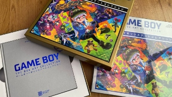

Game Boy The Box Art Collection, rememorando la legendaria portátil de Nintendo
La decana Game Boy, que cumplió el pasado 21 de abril los 32 años, es una figura indispensable para entender la historia del videojuego, constituyéndose en el gran referente y primer éxito de algo tan establecido hoy en día como es el juego portátil.
Siendo una de las consolas más vendidas y bendecida con cientos de juegos, el relato de su legado se puede afrontar desde todo tipo de ángulos como el del libro que nos ocupa: su historia a través de las cajas de los juegos que
componen una parte representativa de su catálogo. Esto es lo que propone Game Boy The Art Box Collection, una lujosa publicación que nos permitirá apreciar la consola de Nintendo y sus juegos a través de las ilustraciones con las
que las compañías trataban de captar nuestra atención y billeteras (o la de nuestros padres).